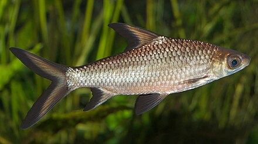

What lets us classify an animal as a bird?
Birds are warm-blooded vertebrates characterized by feathers, which aid in flight, insulation, and communication. They have beaks, lay eggs, and possess a high metabolic rate, lightweight skeletons, and strong muscles. While most birds fly, some species like penguins and ostriches have adapted to swimming or running instead.
Learn more about birds

What lets us classify an animal as a fish?
Fish are cold-blooded aquatic vertebrates with gills for extracting oxygen from water. They have scales and fins that help them move through water, and they vary greatly in size and form. Fish reproduce in various ways, with many species laying eggs, while some give birth to live young.
Learn more about fish

What lets us classify an animal as a mammal?
Mammals are warm-blooded vertebrates that nurse their young with milk. They have hair or fur, a neocortex in their brain, and three middle ear bones. Most mammals give birth to live young, with a few exceptions. Humans, whales, and tigers are just a few examples from this diverse group.
Learn more about mammals
What lets us classify an animal as a reptile?
Reptiles are cold-blooded animals with scaly skin, adapted to live in dry environments. Most reptiles lay eggs, though some give birth to live young. They rely on external heat to regulate their body temperature and include species like snakes, turtles, and lizards.
Learn more about reptiles

What lets us classify an animal as an amphibian?
Amphibians are cold-blooded vertebrates that live both on land and in water. They undergo metamorphosis from larvae to adults and have permeable skin that allows them to breathe. Frogs, salamanders, and toads are some examples of amphibians.
Learn more about amphibians